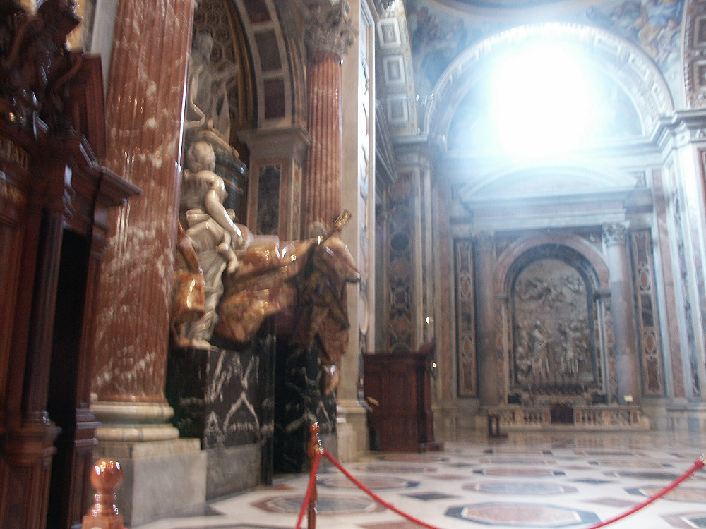

Johnnie and Oberta Baker's Photo Album Previous Gallery Next
|

Not the best of pictures, but because I was in a wheelchair, we couldn't see too much. We decided to keep almost all of the photos, even those we would normally discard. No tour guide was there to tell us what we were seeing. |